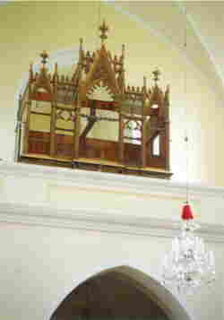
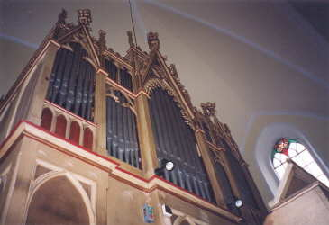

Varhanní skříň.Celý nástroj je u janovických varhan v jedné varhanní skříni, jejíž půdorysné rozměry jsou 4x2,2m. V předních dvou třetinách skříně je ve výšce cca 2m vzdušnice s rejstříky manuálu, v zadní části je dělená vzdušnice pedálového stroje (rejstřík Violo 16’ má vzdušnici ve výšce 1m). Pod vzdušnicí je zásobníkový měch a příslušné části mechanické traktury. Hřídelová deska je v části skříně pod prospektem. Na obrázku je prospekt varhanní skříně po odstranění všech píšťal (kromě malých němých atrap v horní části prospektu). Následující fotografie pak ukazuje prospekt po opravě. |

Hrací stůl.Hrací stůl je místem, odkud varhaník nástroj ovládá (obsahuje souhrn zařízení pro ovládání varhan). Hrací stůl je jednomanuálový a je vzdálen od varhanní skříně a otočen klávesnicí ke skříni (varhany jsou tak za zády varhaníka). Na obrázcích je hrací stůl před opravou (ještě s původní elektroinstalací, která je nyní odstraněna) a pohled na zadní stranu kláves a část traktury v hracím stole. |
[obsah, skříň a hrací stůl, vzdušnice, měch a regulátor, traktura, uspořádání a údržba]